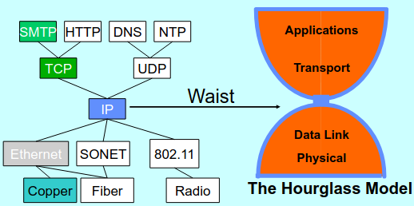

Distributed Systems
Table of Contents
A centralized system consists of major functions performed by a single physical computer. A distributed system, on the other hand, consists of physically separate machines working together on the same task. This could be multiple servers in the same room or building working together, or a peer-to-peer/widespread collaboration topology. Distributed systems promises higher availability with multiple machines, better durability since data is stored in multiple locations, and more security since each piece is easier to make secure.
However, reality has been disappointing at times. We see worse avilability since a distributed system ends up being dependent on every machine being up (“a distributed system is one in which the failure of a computer you didn’t even know existed can render your own computer unusable” — Leslie Lamport). It often has worse reliability, as the system could lose data if any machine crashes. Coordination is also generally more difficult, as we must coordinate multiple copies of shared state information. Security is an issue as well: can you trust the other members of a distributed application enough to even perform a protocol correctly?
1. Protocols
Distributed systems have to communicate, and they do so via communication protocols. The Internet, for example uses many protocols, but there is only one network-layer protocol: IP.

This “narrow waist” facilitates interoperability:
- allows arbitrary networks to communicate
- allows applications to function on all networks
- supports simultaneous innovations above and below IP
2. End-to-End Argument
“End-to-End Arguments in System Design” by Saltzer, Reed, and Clark (1984) was a hugely influential paper that proposed what is known as the end-to-end argument: that some types of network functionality can only be correctly implemented end-to-end.
Say we want to implement reliable file transfers. One way to do this is to make each step reliable, and then concatenate them. Another way to do this is to perform an end-to-end check and try again if necessary. The first way is incomplete: it is impossible to fully guarantee that our solution is perfect, and we still have to do the check anyway. The second way is complete: the full functionality can be entirely implemented at the application layer with no need for reliability from lower layers.
The end-to-end principle says that implementing complex functionality in the network:
- doesn’t reduce host implementation complexity
- does increase network complexity
- probably imposes delay and overhead on all applications, even if they don’t need that functionality
If hosts can implement functionality correctly, implement it in a lower layer only as a performance enhancement, and that it doesn’t impose a burden on applications that do not require that functionality.
3. Distributed Decision Making
Distributed decision making is desirable as it is more fault tolerant. A groupt of machines can come to a decision even if one or more of them fail during the process.
3.1. General’s Paradox
Say we have two generals on separate mountains that can only communicate via messengers. Critically, however, these messengers can be captured. The two generals wish to coordinate an attack: if they attack at different times, they all die; if they attack at the same time, they win.
We can reframe this question as: can messages over an unreliable network be used to guarantee two entities do something simultaneously?
The answer is no, even if all messages get through. This is because there is no way to be sure last message gets through, since each message needs an acknowledgement!
3.2. Two-Phase Commit
Since we can’t solve the General’s Paradox (i.e. simultaneous action), let’s solve a relaxed problem. We want two or more machines to agree to do something (or not do it), atomically. There are no constraints on time here, just that it will eventually happen.
One solution is the two-phase commit protocol. We keep a persistent stable log on each machine, which keeps track of whether the commit has happened. If a machine crashes, it first checks its log on startup to recover state of the world at time of crash.
During the prepare phase, the coordinator asks all participants to either promise to commit or abort the transaction. The voters first record their promise in the log, then acknowledges their promise to the coordinator.
During the commit phase, if anyone votes to abort, thec coordinator writes abort in its log and tells everyone to abort; each records abort in their respective logs. On the other hand, if all participants vote to commit, then the coordinator writes commit to its log. Then the coordinator asks all nodes to commit; each node responds with ACK, and once coordinator receives all ACKs, the coordinator writes got commit to its log.
We can represent the two-phase commit protocol as a state machine:
However, there is an undesirable feature of two-phase commit, which is that it blocks if a node fails. One machine can be stalled until another site recovers. Alternatives to two-phase commit include:
- Three-phase commit: one more phase that allows nodes to fail or block and still make progress
- PAXOS: an alternative used by Google and others, however some believe it is extremely complex
- RAFT: PAXOS alternative that is simpler to describe complete protocol
3.3. Byzantine General’s Problem
Say we have one general and \(n-1\) lieutenants (\(n\) players total). However, some number of these (including the general) can be malicious. The commanding general must send an order to his lieutenants such that the following integrity constraints apply:
- All loyal lieutenants obey the same order.
- If the commanding general is loyal, then all loyal lieutenants obey the order he sends.
It is impossible to solve the problem with \(n=3\) because one malicious player can mess up things. It can be seen that for a lieutenant in this configuration, it is impossible for it to distinguish if its fellow lieutenant is malicious or the general is malicious. It can also be shown that if we have \(f\) malicious entities, then we need \(n > 3f\) to solve the problem.
One solution is the Byzantine Fault Tolerance (BFT) algorithm, which allows multiple machines to make a coordinated decision even if some subset of them (\(< \frac{n}{3}\)) are malicious.
4. Remote Procedure Calls
Remote procedure call (RPC) is a way to call a procedure on a remote machine such that it looks like an ordinary function call. The idea is that the RPC service automates all the complexity of translating between representations of data on each side and communicating between machines. “Stubs” provide glue on the client/server, responsible for serializing and/or deserializing incoming or outgoing data. A stub generator is involved to generate these stubs, often from a interface definition language (IDL), which outputs source code in the appropriate language.
Note that RPC is not performance transparent: there is a lot of overhead involved with serialization, stubs, kernel-crossing, communication, etc. Programmers should be aware that RPC is not “free.”